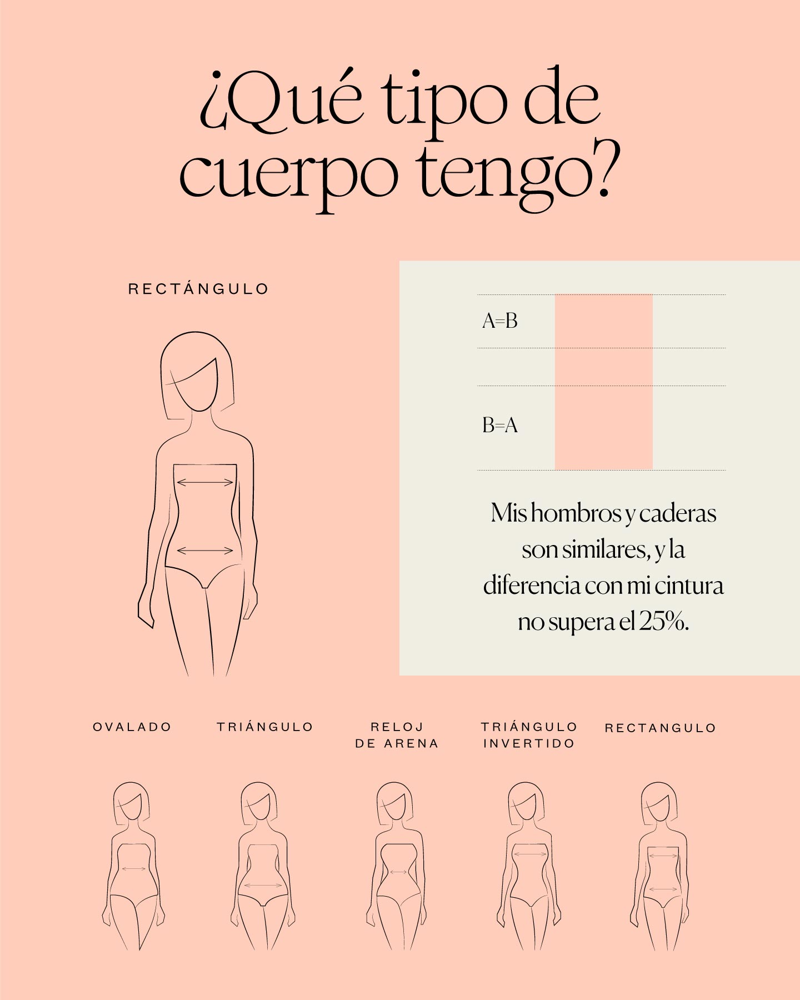

¿Qué tipo de cuerpo tengo?
Para armar un buen outfit es necesario que conozcamos la simetría de nuestro cuerpo y conocer las prendas que hacen que se vea mejor nuestro cuerpo.
| Las mujeres con silueta de triángulo tienen la parte superior del cuerpo más estrecha, con unos hombros ligeramente más pequeños que las caderas. La cintura es también fina y suelen tener un trasero más pronunciado. |
| Sí | No |
|---|---|
|
A utilizar colores brillantes, tonos fuertes y estampados en la parte superior. Crea a la vez contraste con colores neutros en la parte inferior para reequilibrar visualmente la figura. A los tirantes. Son perfectos para mujeres con esta figura, pues ayudan a marcar la atención en esta zona y potenciarla, especialmente los que tienen ondulaciones o mucho volumen. A los tacones para estilizar y equilibrar la figura. En cuanto a complementos, opta por unos maxi pendientes o por un collar choker. |
A accesorios que resalten las caderas como cinturones gruesos o llamativos, volantes o bandoleras, añadirán mucho volumen a esa zona. A pantalones o faldas a rayas horizontales y a los pantalones de talle bajo. A tops ajustados, acentuarán el desequilibrio que hay entre la parte superior e inferior del cuerpo. |


|  | El cuerpo rectangular se caracteriza por la ausencia de curvas pronunciadas. La silueta de las mujeres con este tipo de cuerpo es rectas y la anchura de los hombros es igual a la de las caderas. La cintura está poco marcada y las piernas suelen ser alargadas. |
| Sí | No |
|---|---|
|
A destacar la cintura. Utiliza cinturones, tanto en la cintura como en la cadera, para resaltar las curvas. Esto te permitirá crear nuevas siluetas y romper un poco con una línea más recta. A jugar con los efectos visuales para construir nuevas formas como, por ejemplo, generando volumen con capas, flecos o prendas voluminosas en uno de los tres puntos clave de tu silueta (hombros, cintura o caderas). |
A prendas oversize. Las prendas demasiado grandes no ayudarán a realzar tu figura. A los total look monocolor, tenderán a aplanar mucho tu silueta rectangular. |


 |
Tener este tipo de silueta es una cuestión de proporciones en la que entran en juego las caderas, los hombros y la cintura. Esto significa que puedes tener una silueta de reloj de arena tanto si eres alta o baja, como si eres de una constitución más delgada o curvy. |
| Sí | No |
|---|---|
|
Opta por escotes redondos o en forma de V. Blusas o camisetas entalladas. |
Evita prendas de estilo oversize. Evita potenciar el volumen en caderas y hombros. No sobrecargues la parte del pecho con estampados fuertes o volantes. |


¿Cómo armar nuestros outfits?
La moda siempre ha sido una forma de expresión personal. Estos outfits están llenos de estilo y personalidad, y suelen incluir colores y patrones únicos que no se encuentran en la ropa tradicional. Tanto mujeres como hombres pueden destacar en su modo de vestir. Este estilo no es exclusivo de mujeres. Los hombres pueden proyectar mucho de sí mismos con este tipo de outfit.
1. Conoce tu estilo personal.
Conocer tu estilo personal es clave para crear el outfit perfecto. De modo que, esta es la primera clave para que luzcas original.
2. Combina colores y patrones.
Los outfits suelen incluir una combinación de colores y patrones únicos. Los patrones florales, geométricos o abstractos son comunes en los outfits aesthetic, pero no tengas miedo de experimentar con diferentes patrones. También puedes jugar con los colores, mezclando tonos complementarios o contrastantes para crear un look llamativo.
3. Presta atención a los detalles.
Cuando vayas de compras, tómate tiempo para ver cada pieza. Observa la calidad de las prendas y, sobre todo, no caigas en la tentación de comprar lo primero que veas. Más bien, haz compras inteligentes. Así pues, debes tener buen ojo para que el outfit proyecte en cada detalle tu propia personalidad y estilo.
4. Siéntete cómodo.
Más allá de cualquier otro consejo, lo más importante es que te sientas cómodo y seguro con el outfit que elijas. Si una prenda no te hace sentir bien, déjala en el clóset. Al final del día, lo que importa es cómo te sientes con lo que llevas puesto. La moda es una forma de expresión personal, lo más importante es que seas tú mismo y por supuesto te sientas cómodo con lo que estás usando.